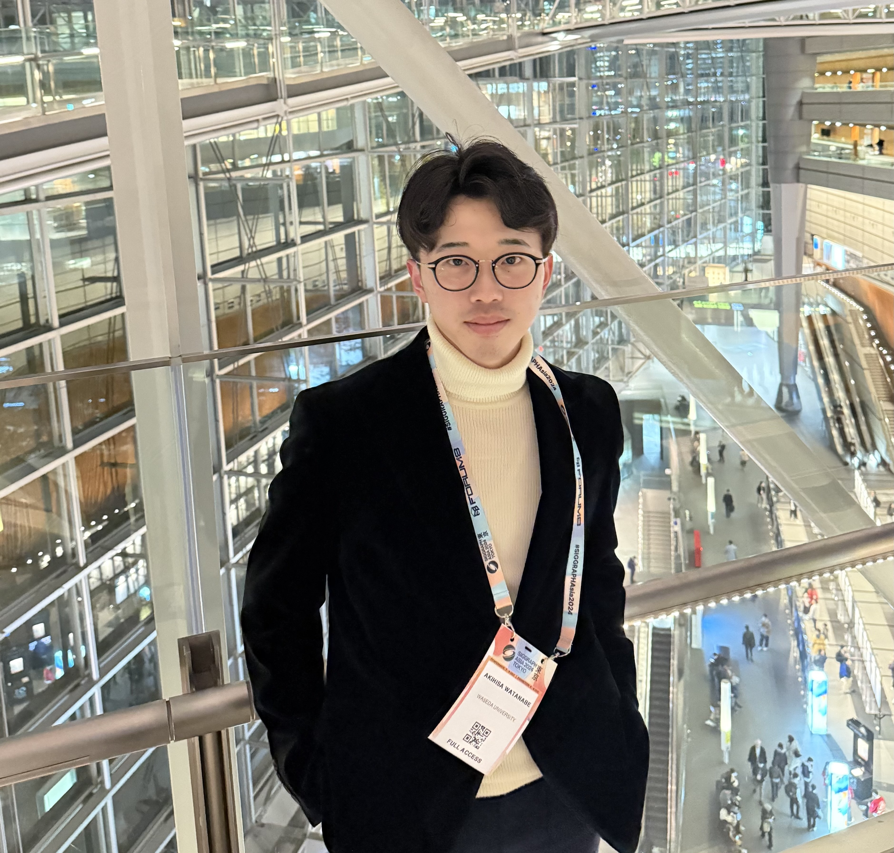

|
Akihisa Watanabe
I am a first-year Master's student in Computer Science at Waseda University in the Simo-Serra Lab, advised by Prof. Edgar Simo-Serra. I received my B.Eng. in Applied Mechanics and Aerospace Engineering, with a minor in Computer Science, from Waseda University.
Email /
CV /
Github /
X
|

|
Publications
-
ProjFlow: Projection Sampling with Flow Matching for Zero-Shot Exact Spatial Motion Control
Akihisa Watanabe, Qing Yu, Edgar Simo-Serra, Kent Fujiwara. CVPR 2026.
paper / website
-
Causal Motion Diffusion Models for Autoregressive Motion Generation
Qing Yu, Akihisa Watanabe, Kent Fujiwara. CVPR 2026.
paper / website
-
SimDiff: Simulator-constrained Diffusion Model for Physically Plausible Motion Generation
Akihisa Watanabe, Jiawei Ren, Li Siyao, Erwin Wu, Yichen Peng, Edgar Simo-Serra. arXiv.
paper / website
-
Open-Domain Dialogue Quality Evaluation: Deriving Nugget-level Scores from Turn-level Scores
Rikiya Takehi, Akihisa Watanabe, Tetsuya Sakai. ACM SIGIR Asia '23.
paper / slide
|
|
{kind=link}